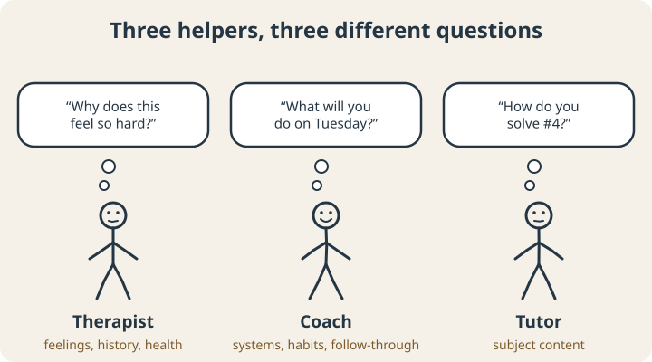
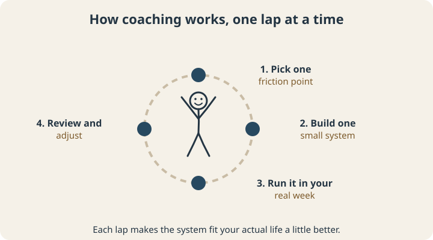

September 23, 2026
What Is ADHD Coaching? (And Does It Actually Work?)

At some point, someone has probably said to you, “Have you thought about getting an ADHD coach?”
And you nodded, and thought, “Sure, maybe,” and then quietly wondered what that actually means. Is it therapy? A personal assistant? A motivational speaker who texts you? Someone who stands behind you with a clipboard?
“ADHD coach” is one of those job titles everyone has heard and almost nobody can describe. This post covers what a coach does, what they don’t do, what the research says so far, and how to tell whether it’s worth your money.
The short version
An ADHD coach helps you close the gap between what you know you want to do and what actually happens on a random Tuesday. Coaches don’t diagnose, don’t prescribe, and don’t dig through your childhood. They work on the practical machinery of your life (starting tasks, planning, time, follow-through) by building systems that fit how your brain actually works, then adjusting them until they stick.
If you’ve read our post on executive dysfunction, coaching is one way to get help building the scaffolding it describes.
Coach vs. therapist vs. tutor
These three get mixed up constantly, and the difference matters, because they solve different problems.

- A therapist works on your emotional health: anxiety, depression, trauma, relationships, the why behind the patterns. Therapists are licensed clinicians, and some can diagnose.
- A coach works on behavior and systems: the what and how of getting things done. What will you do, when, and what happens when the plan breaks?
- A tutor teaches subject content: chemistry, essay structure, the quadratic formula.
Plenty of people benefit from more than one of these at the same time. Coaching often works best alongside medical care or therapy. If you’re struggling with your mood, your safety, or your mental health in a serious way, start with a clinician. (We compare the two in more depth in ADHD Coach vs. Therapist.)
What actually happens in ADHD coaching?
Good coaching looks a lot like running small experiments on your own life.

A typical arc looks like this:
- Pick one friction point. Choose one expensive, recurring problem: starting work in the morning, the Sunday-night panic, the bills that never get opened.
- Build one small system. A specific plan for that problem, designed around your brain: your energy patterns, your interests, and what has and hasn’t worked before.
- Run it in your real week. Use it on an actual Tuesday, with the actual distractions.
- Review and adjust. What broke, and where? Every failure tells you something about what to change.
Between sessions, many coaches offer light check-ins, because the space between sessions is where ADHD plans tend to quietly fall apart. Having someone who will ask, kindly, “So how did Tuesday go?” is a big part of what you’re paying for.
Does ADHD coaching actually work?
The short answer: the research is promising, but still young.
A few of the studies worth knowing about:
- Adults. In one of the first outcome studies of ADHD coaching for adults, 45 people rated 22 areas of concern before and after coaching, and reported improvement.1
- College students, 8 weeks. A five-year evaluation of 148 college students found that after an 8-week coaching program, students improved in all ten areas of study and learning strategies measured, as well as self-esteem, symptom distress, and satisfaction with school and work. The results held across different semesters and different (novice) coaches.2
- A comparison group. In a study where college students with ADHD were randomly assigned to coaching or a comparison group, the coached students scored higher on learning and study strategies (including self-regulation) and on well-being.3
What the research does line up with is the logic of coaching. Planning ahead in specific if-then terms (“when X happens, I’ll do Y”) reliably helps people follow through,5 and a coach’s job is largely to help you make those plans concrete, then keep revising them.
Is ADHD coaching right for you?
Coaching tends to be a good fit if:
- You know what you should do and still can’t make it happen consistently
- You’ve tried the apps, planners, and productivity systems, and they last about nine days
- You want practical change in how your days actually run
- You’re willing to experiment, including with things that might not work the first time
It’s probably not the right first step if you’re in a mental health crisis, need a diagnosis or medication review, or mainly need help with emotional healing. A good coach will tell you that directly and point you to the right kind of help.
How to choose an ADHD coach
Coaching isn’t licensed the way therapy is, so it’s worth asking a few questions:
- What’s your training? Look for ADHD-specific coach training, and programs accredited by groups like the International Coaching Federation (ICF) or the Professional Association of ADHD Coaches (PAAC).
- What does a session actually look like? Listen for a concrete answer.
- What happens between sessions? Check-ins? Messaging? Nothing?
- What don’t you do? A coach who’s clear about their limits is a coach you can trust.
- Can we try a free consultation first? Fit matters more than credentials on paper.
In the spirit of that last point: ExEF’s coaching is led by Jacob Rozansky, a high school special educator who is currently completing ADDCA ADHD coach training (an ICF- and PAAC-accredited program). Coaching here starts with one friction point and a four-session sprint, and every package begins with a free 30-minute consultation so you can see whether it fits before committing to anything.
Is it worth a conversation?
ADHD coaching is practical help with the gap between intention and action: a structured partnership where you build systems around how your brain works and keep adjusting them until they hold. The research so far is encouraging. The cheapest way to find out whether it helps you is a single conversation.
Scope note: Coaching is skills-based support. It isn’t therapy, diagnosis, or medical treatment, and it isn’t a substitute for them.
Sources
- Kubik, J. A. (2010). Efficacy of ADHD coaching for adults with ADHD. Journal of Attention Disorders, 13(5), 442–453. doi.org/10.1177/1087054708329960
- Prevatt, F., & Yelland, S. (2015). An empirical evaluation of ADHD coaching in college students. Journal of Attention Disorders, 19(8), 666–677. doi.org/10.1177/1087054713480036
- Field, S., Parker, D. R., Sawilowsky, S., & Rolands, L. (2013). Assessing the impact of ADHD coaching services on university students’ learning skills, self-regulation, and well-being. Journal of Postsecondary Education and Disability, 26(1), 67–81. eric.ed.gov/?id=EJ1026813
- Ahmann, E., Tuttle, L. J., Saviet, M., & Wright, S. D. (2018). A descriptive review of ADHD coaching research: Implications for college students. Journal of Postsecondary Education and Disability, 31(1), 17–39. eric.ed.gov/?id=EJ1182373
- Gollwitzer, P. M., & Sheeran, P. (2006). Implementation intentions and goal achievement: A meta-analysis of effects and processes. Advances in Experimental Social Psychology, 38, 69–119. doi.org/10.1016/S0065-2601(06)38002-1